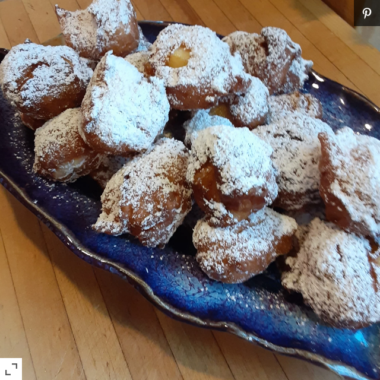

Olie Bollen

Description
This recipe was handed down to me by my mother. It is a Dutch
favorite on New Year's Day. I spent New Year's Day with my
in-laws for the first time and brought this tradition with
me. They were very impressed with this delicious doughnut-like
treat.
Ingredients
- 2(.25 ounce) packages active dry yeast
- 1/2 cup lukewarm water (110 degrees F to 115 degrees F)
- 4 1/2 cups all-purpose flour
- 1/4 cup white sugar
- 1 teaspoon salt
- 2 eggs, beaten
- 1 1/2 cups milk
- 1 1/2 cups chopped apple
- 1 cup raisins (optional)
- 1 quart vegetable oil for frying
- white sugar for decoration